후티 반군, 해전사에 새 장을 열다 - 대함탄도탄(ASBM) 이야기
게시: 2024-01-18T06:30:16+09:00
<후티 반군이 인류 역사에 새로운 장을 쓰다> 한때 우리 언론들이 Houthi를 부족 이름인줄 알고 후티족 반군이라고 부르는 바람에 후티반군이 굉장히 원시적인 수준이라고들 오해하지만 , 실은 예멘의 수도 사나를 장악하고 있는 것이 후티 반군이며 멋진 군복을 입고서 각종 미사일을 동원한 군사 퍼레이드도 벌일 정도의 수준.
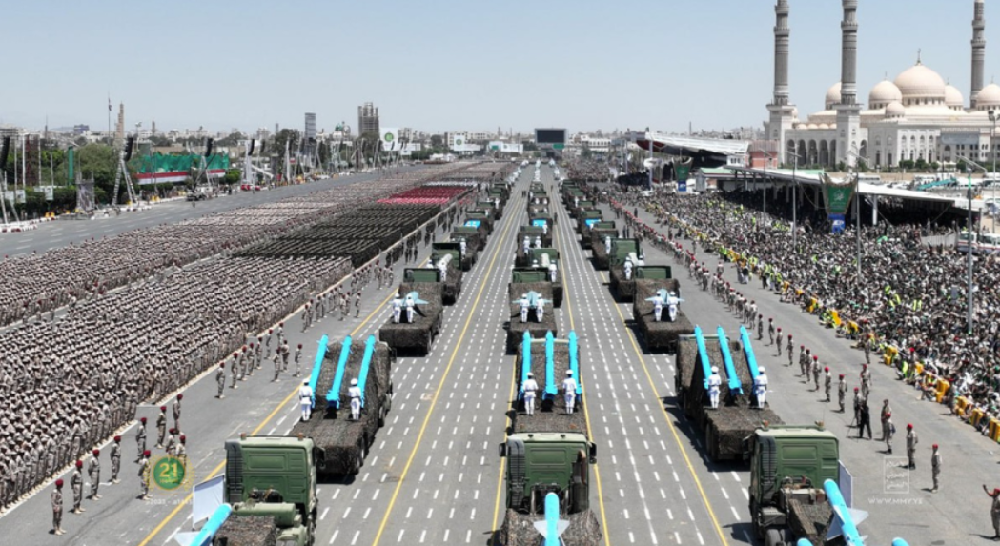
요즘 핫한 후티 반군의 선박 공격에는 UAV, 대함순항미쓸과 함께 대함탄도탄(Anti-Ship Ballistic Missile, ASBM)이 사용되었는데, 의외로 이번에 사용된 것이 실전에서 대함탄도탄이 사용된 역사상 첫사례라고. 아래 사진은 후티 반군의 2023년 군사 퍼레이드에서 나온 이란제 Tankil 대함탄도탄 (사거리 500km, 전자광학 및 적외선 유도).
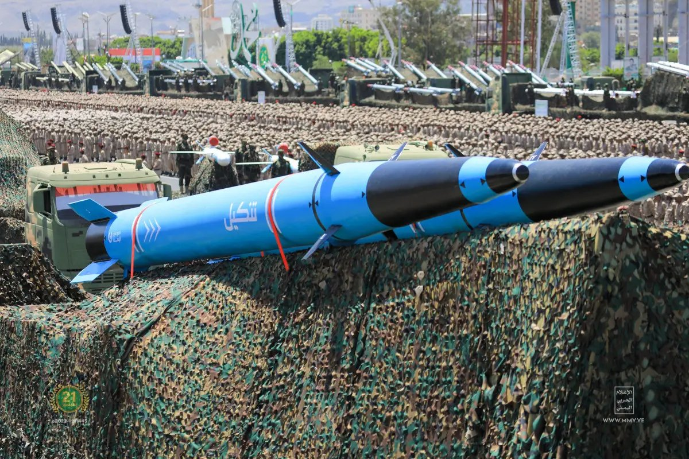
대함탄도탄은 원래 냉전 시절 소련이 압도적으로 우월한 미해군을 상대하기 위해 개발을 시작한 무기였으나, 도중에 핵무기 관련 군축 협상이 이루어지면서 결국 전력화로 이어지지는 못했음. 현재는 중국이, 역시나 소련처럼 도저히 정상적인 무기 체계로는 감당할 수 없는 미해군, 특히 항공모함 전단을 상대하기 위해 DF-21 등의 ASBM을 개발 배치한 상태. 미군은 DF-21이 과연 정말로 1천 km 밖의 대양을 30노트로 움직이는 항공모함을 명중시킬 수 있는지 여부에 대해 다소 회의적으로 보고 있다는데, 자세한 것은 알려져 있지 않음. 현재까지 보도된 바를 보면 중국이 내륙 사막지대에 철도 시스템을 갖춰놓고 움직이는 75m짜리 모조 항모 타겟을 만들어서 대함 유도탄을 테스트하려는 것 같은데, 정작 실제 테스트가 이루어졌다는 뉴스는 없음. 이런 뻔한 위치의 뻔한 동선으로 움직이는 타겟과 망망대해에서 지그재그로 움직이는 실제 항모와는 매우 다름.
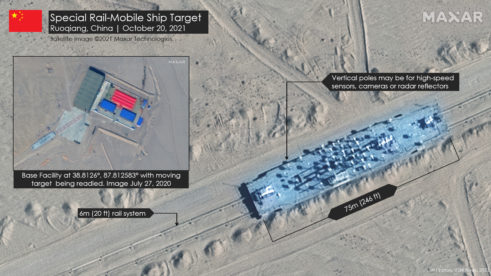
<대함탄도탄 개발과 운용의 어려움> 대함탄도탄의 유도 방식은 대략 아래와 같음. 1) 위성이든 정찰기이든 스파이 선박이든 뭐든 아무튼 목표함의 위치와 방향, 속도를 파악하여 탄도탄 발사대로 전송 2) 탄도탄 발사대에서는 탄도탄의 비행 속도와 거리에 따라, 탄도탄이 목표함 근처까지 날아갔을 때 목표함이 대략 어디쯤 있을지 위치를 계산하여 탄도탄에 입력하고 발사 3) 탄도탄은 일단 관성유도장치나 GPS 등으로 지정된 상공까지 비행 4) 목표물 근처에서는 자체 seeker(레이더, electro-optical (EO), 적외선 센서 등등)를 이용해 목표물을 탐색
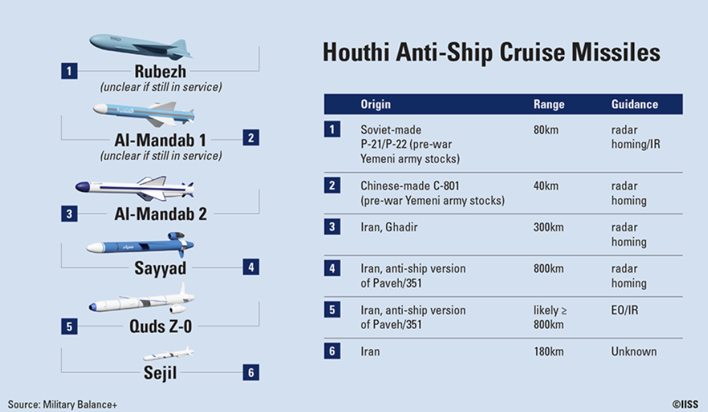
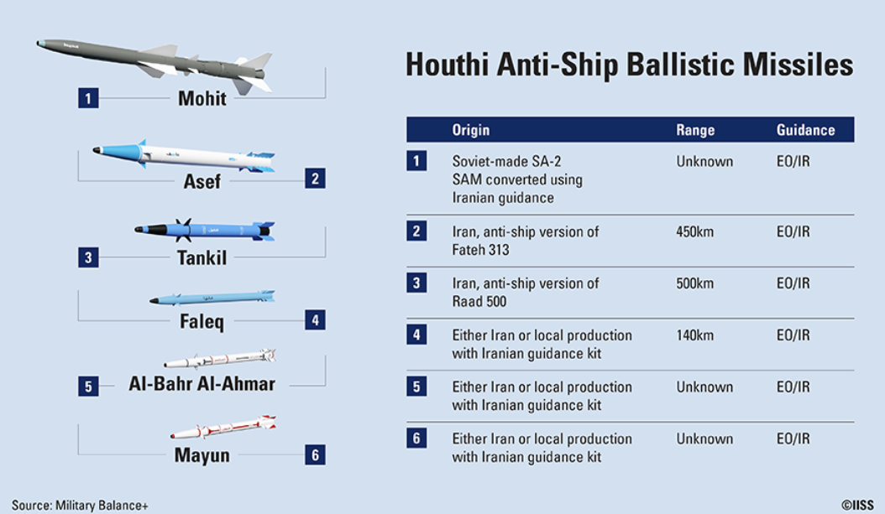
(후티 반군들이 가진 대함미쓸들의 종류. 특이한 점은 대함순항미쓸의 종말 유도는 전자광학/적외선, 레이더 등 다양한 방식으로 유도되는데 대함탄도탄은 모두 전자광학/적외선 방식이라는 점. 중국의 DF-21은 레이더 방식이라고 알려져 있음.) 모든 미사일 개발은 당연히 기술적으로 매우 어려운 일인데, 특히 대함탄도탄은 매우 기술적 난이도가 높은 편이라고 함. 이번에 후티 반군이 쏜 대함순항미사일과 대함탄도탄, UAV(드론) 등은 대부분 이란이 제공하거나 이란 기술로 후티 반군이 자체 생산/조립한 것으로 보이는데, 이란 기술진도 대함순항미사일은 비교적 쉽게 만들었으나 대함탄도탄 개발에는 상당히 애를 먹었다고 함. 그리고 미해군도 대함순항미사일보다는 대함탄도탄에 대해 매우 신경질적으로 반응하는 분위기. 그렇게 대함탄도탄이 만드는 측이나 막는 측이나 모두 어려워 하는 이유는 기본적으로 탄도탄이 순항미쓸보다 훨씬 빠르기 때문. 특히 DF-21처럼 거의 대기권 밖으로 나갔다 재진입하는 수준의 장거리 탄도탄은 최소 마하 5, 최대 마하 10의 속도를 낸다고 함. 그렇게 엄청난 속도를 내면 막는 측도 어려워지지만 쏘는 측도 제어나 통신, 유도 등에서 어려울 수 밖에 없음. 특히 비행 거리가 1700km가 넘는 수준이라면 목표함이 예상과는 다른 방향으로 움직였을 가능성도 있기 때문에 비행 도중에 목표함의 위치를 업데이트해주어야 할 필요도 있음. 그런데 대기권에서 마하 10의 속도를 내는 비행체 주변은 고열로 이온화된 입자들이 둘러싸서 소위 플라즈마(plasma) 막이 원하든 원치 않든 씌워짐. 이런 플라즈마 막은 이걸 탐지하려는 미해군의 레이더 전파에게도 이 미쓸에게 정보를 업데이트해주려는 중국의 통신용 전파에게도 어려움을 안겨줌. 또, 미사일이 머리 부분에 장착된 레이더로 유도되는 방식이라면 그 레이더 작동에도 크게 문제가 됨.
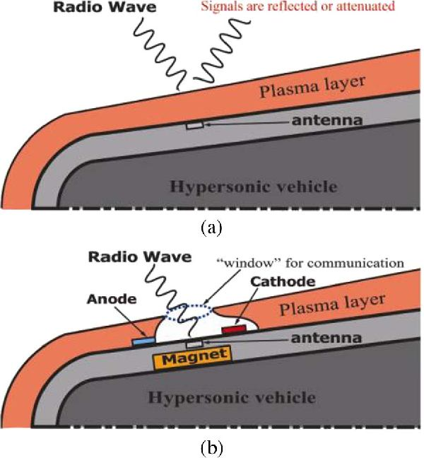
(고정된 도시나 공군기지 등을 때리는 탄도탄은 INS로 유도되니까 문제가 없겠으나, DF-21 같은 (자칭) 항모 킬러들은 빠른 속력으로 움직이는 항모를 대체 어떻게 종말 유도해서 때리겠다는 것일까? 그건 미군도 궁금해하는 부분이니 우린 당연히 모르지만, 검색 해보니 다 솔루션이 있는 모양. 저렇게 자기장을 만들면 해당 부분의 플라즈마 막을 걷어내고 외부와 전파 통신이 가능하다고.) <보여야 쏠 것 아닌가?> 이번에 후티 반군이 쏘았다는 ASBM Tankil은 DF-21과는 달리 대기권을 나갔다 들어오는 수준은 아니므로 저런 플라즈마 막까지 고민할 필요는 없겠지만, 그래도 어려운 부분은 바로 위에서 언급한 제1단계. 즉 최초의 목표물 위치 획득. 항모가 각종 미쓸로부터 안전하다는 이유 중 하나가 넓은 바다에서 빠른 속도로 움직이므로 정확한 위치 파악이 어렵다는 점. Active seeker를 갖춘 대함 미쓸을 쏜다고 하더라도 대충 어느 위치에 있으니 거기서 찾으라고 입력한 뒤 쏘아야 하는데, 그걸 실시간으로 파악하는 것은 여전히 어려움. 근데 홍해는 좁은 바다이고 상선은 느리니까 그 위치 파악은 전혀 어렵지 않을까? 어렵지 않음. 하지만 그래도 일단 레이더이든 맨 눈이든 일단 보여야 위치를 파악하는데, 홍해가 좁다고 해도 폭이 300km 정도이고 해안 전망대에서 볼 수 있는 수평선까지의 거리는 대략 30km 미만이라서 해안가에 레이더를 설치해놓았다고 해도 (해안에 일부러 바싹 붙어 가는 선박이 아닌 다음에야) 상선들을 볼 수는 없음. 이번에 미군이 무엇으로 어디어디를 폭격했는지는 소상히 보도되지 않았으나, 대충 대함 미쓸 발사대와 탄약고, 그리고 레이더 기지를 쳤다고 함. 레이더? 예멘의 지형도를 보니 후티 반군이 장악한 예면 서부는 높은 산맥이 많은 곳. 아마 그런 정상 어딘가에 레이더를 설치하고 거기서 홍해를 오가는 선박들을 파악했을 수도.
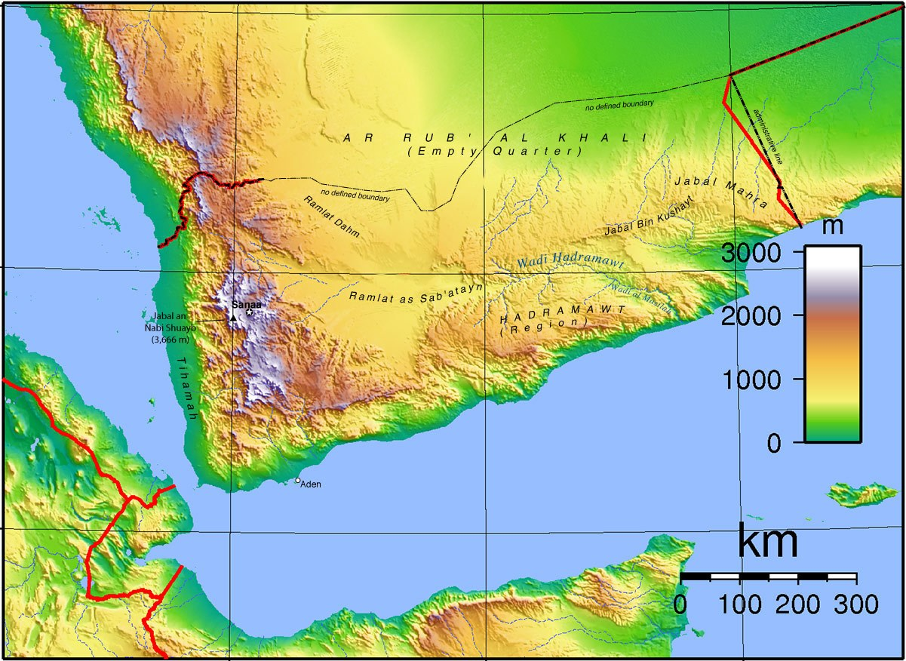
그럼에도 불구하고 고지에 설치한 레이더만으로 홍해를 오가는 수많은 선박 중에서 특정 선박을 찾아내기는 어려움. 누군가 항공기로 근접 촬영을 하든 해야 하는데, 요즘은 UAV가 발달했으므로 후티 반군이 그런 정찰자산을 이용하여 목표물을 획득했을 수도 있긴 함. 그러나 많은 전문가들이 의심하는 것은 결국 이란의 스파이 선박인 Behshard (아래 사진).
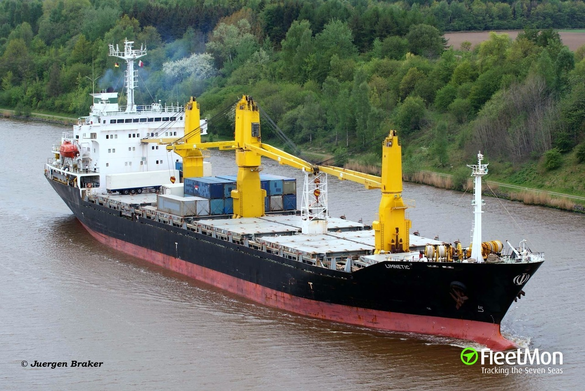
베샤드는 흔한 일반 화물선처럼 보이지만 실제 소속은 이란 혁명수비대로서, 홍해를 오가는 선박들을 면밀히 관찰한다고. 특히 후티에 의한 선박 피격이 있을 때면 매우 기묘한 항로를 보여주며 그 일대를 어슬렁거린다고 (아래 그림). 그러나 이들이 후티 반군 미쓸의 유도를 위한 정보를 보내주고 있다고 해도, 미군이 과연 베샤드를 공격할 수 있을까? 국제법적으로도 어려울 듯.
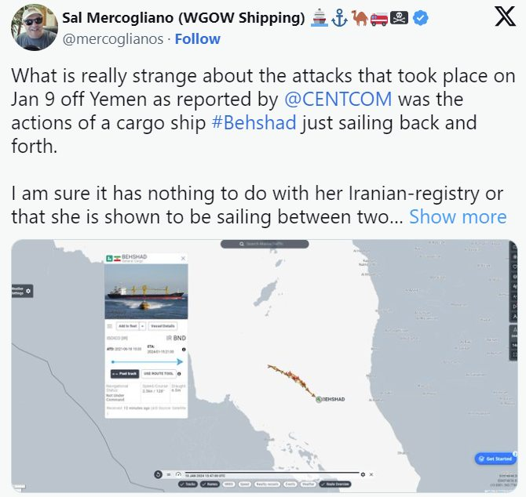
<명중률은 어느 정도일까?> 근데 저 후티 반군 대함 미쓸들의 명중률은 어느 정도일까? 대부분 그냥 완전히 빗나가서 빈 바다에 떨어진다고. 근데 미군은 이에 대해 마냥 비웃지는 않고 있고, 다음 두 가지 이유로 일부러 빗나가게 쏘고 있을 가능성이 있다고 보고 조심하는 중. 1) 미해군 군함들이 안심하고 더 가까이 접근하도록 유인. 2) 미쓸이 빗발처럼 날아온다는 것을 보여주어 아예 선박들이 홍해로 못 들어오게 겁을 주되, 그렇다고 지나치게 많은 피해를 내서 대대적인 보복공격을 받을 가능성을 줄이려고. <명중률이 안 좋아도 상관없는 신박한 무기 체계> 실은 명중률이 안 좋다는 부분이 미해군을 진짜 짜증나게 하는 대함탄도탄의 특징. 중국의 DF-21이든 후티 반군의 Tankil이든, 대함탄도탄은 꼭 명중률이 좋아야 할 필요가 없음. 그게 신묘한 부분. 해군에는 mission-kill이라는 용어가 있음. 미쓸이든 폭탄이든 어뢰든 적함을 꼭 격침시킬 필요가 없고 그냥 심각한 손상을 주어 더 이상 임무 수행 불가능 상태에 빠뜨린다는 말. 문제는 대함탄도탄이든 대함순항미쓸이든, 이게 신박한 방법으로 미해군 함정들을 mission-kill 시킨다는 것. 미해군이 의심하는 것처럼, 어쩌면 DF-21이나 Tankil이나 정확한 종말유도가 불가능한, 완성도가 크게 떨어지는 얼치기 무기체계일 수도 있음. 그러나 상관없음. 대함탄도탄은 결코 1~2발이 날아오지 않음. 어렵게 획득한 위치 정보를 가치 있게 쓰려면 많게는 수십발의 다양한 미쓸들이 날아올 것임. 아무리 명중률이 의심스럽다고 하더라도, 그런 미쓸들이 이 쪽 방향으로 떼거리로 날아오는 것이 포착된다면 당연히 미해군 함정에서는 하나하나 다 요격 미쓸로 대응할 것임. 불안하니까 어쩌면 대함미쓸 하나에 요격 미쓸은 2방씩 쏠 수도.
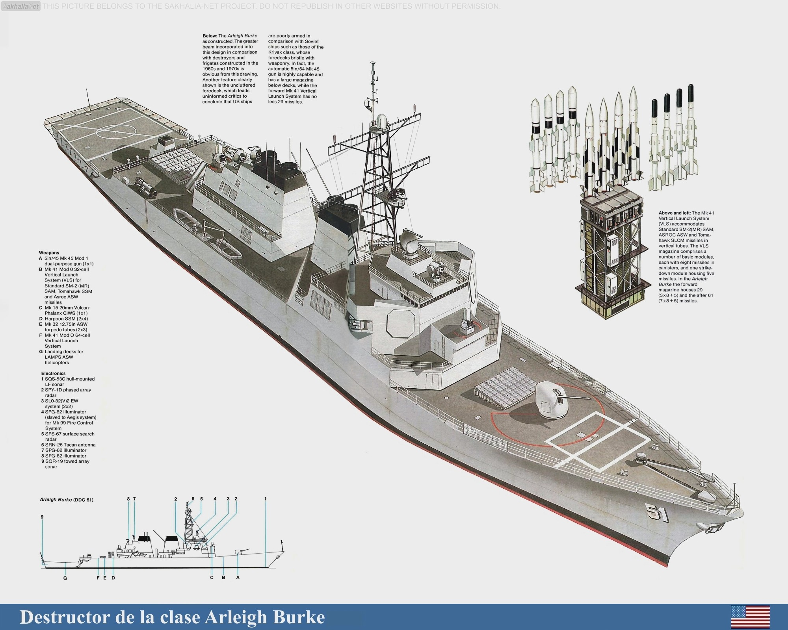
(Arleigh Burke급 구축함에는 수직 미사일 발사대가 90~96기 있는데 저 중에 몇 %가 대공미쓸이고 몇 %가 대지 또는 대잠용인지는 모르겠음.) 문제는 미해군 구축함에게는 그런 요격 미쓸이 수십발 밖에 없다는 것. 후티 반군처럼 두세 발을 쏘는 것이 아니라 수십~수백 발의 대함탄도탄을 쏘아대는 적과 교전하고나면, 대부분의 함정들이 요격미쓸 부족으로 수백~수천 km 떨어진 모항으로 되돌아가야 함. 비록 명중은 못 시켰더라도, mission kill을 이루는 셈. 호위 구축함들이 돌아가면 항공모함도 돌아가야 함. 적어도 수 일간은 제해권이 상실되는 셈. 나폴레옹이 빌뇌브 제독에게 '딱 6시간만 도버 해협을 장악해주면 영국을 정복할 수 있다'라고 큰 소리를 친 것을 생각하면 그건 꽤 큰 문제. 미해군으로서는 진짜 짜증나는 것이, 그렇게 수백만 달러짜리 미쓸을 소진해가며 요격한 대함탄도탄들이 실은 요격 안해도 상관없는, 눈먼 미쓸일 수도 있었다는 점. 아마 그 실제 명중률은 쏘는 측에서도 잘 모를 것.
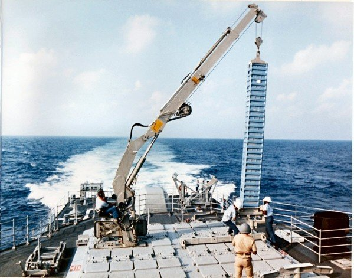
(초기에는 Arleigh Burke급 미해군 구축함에 기중기를 갖춰서 해상에서도 저렇게 Vertical Launch System에 미사일을 재장전하기도 했으나, 그때도 작은 미사일에 국한된 일이었음. 지금은 저 기중기도 떼어낸 상태이고 해상 재장전은 포기한 상태라고. 원래 안정적인 항구에서 재장전할 때도 가끔 사고가 일어나 장비가 파손되거나 사람이 다치는 일이 발생하기도 하는데, 거친 바다에서 재장전하는 것은 득보다는 실이 많았기 때문. 다만 어떻게 저런 해상 재장전을 안전하고 효율적으로 할 수 있을지 연구는 계속 진행 중이라고.) ** 레이더 개발 이야기는 다음 주에 이어집니다.